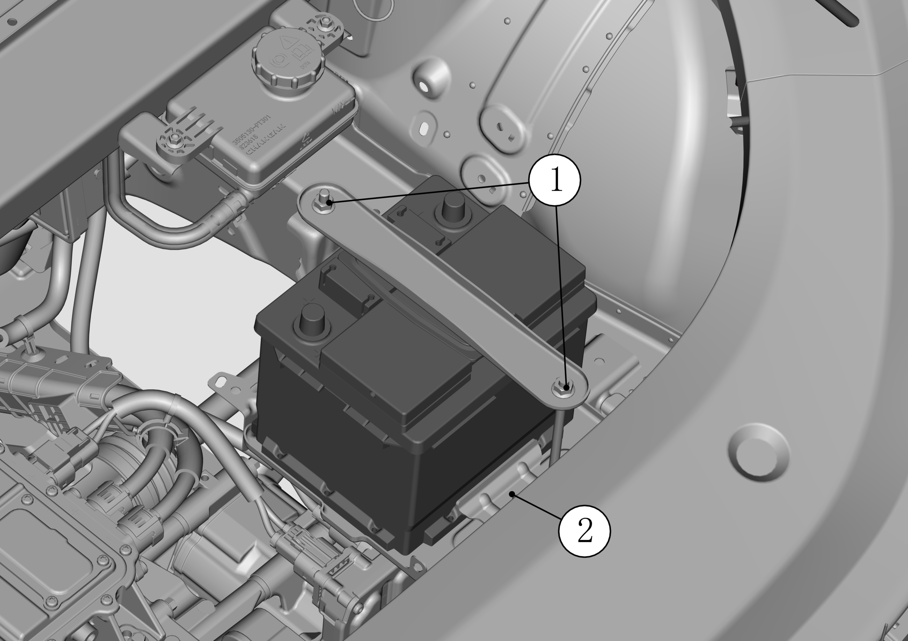

蓄电池
-
焊接前，应使用M8螺栓扳手拆下①蓄电池负极接线及②蓄电池正极保险盒，详见下图：

-
在蓄电池附近进行明火操作时，应使用M8螺栓扳手拆下①蓄电池上方压条及②蓄电池压板后取下蓄电池；

-
电池使用过程中应避免：充电缺乏、过充电、过放电；
-
电池内部短路：内部短路的电池充电时电解液温度上升快，较正常电池温度高，电压与SOC上升缓慢，充电末期电压低，放电时电压与SOC下降很快，需及时更换蓄电池；
-
极板不可逆硫酸盐化：电池放电后长期未充电导致充电缺乏，常过放电或深度放电，导致极板长时间处于半放电或放电过程中，电解液液面低，使正负极板上部硫酸铅长时间未转换为活性物质，未按时进展均衡充电。对略微的硫酸盐化电池通过适当过充电可复原并需按时进行均衡充电，较重需更换蓄电池。